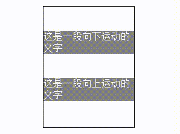

需求:
css实现鼠标移动淡入淡出及元素移动效果
示例：
Test_area：
这是一段向下运动的文字
这是一段向上运动的文字
知识点：hover&animation&keyframes
hover实现鼠标移动至元素上所产生的效果
animation实现动画所需要的时间
@keyframes关键帧从0至动画结束中元素的位置及透明度等
css源代码：
<style>
#box1{width: 150px;height: 200px;border: 1px black solid; margin: 20px auto;}
#box1 #p1{color: white;background: grey;text-indent: 0;margin: 40px auto;width: 150px;}
#box1 #p2{color: white;background: grey;text-indent: 0;margin: 40px auto; width: 150px;}
#box1:hover #p1{animation: 0.8s upMove_down;}
@keyframes upMove_down{
0%{transform: translateY(-50px);opacity: 0;}
100%{transform: translateY(0);opacity: 1;}
}
#box1:hover #p2{animation: 0.8s downMove_up;}
@keyframes downMove_up{
0%{transform: translateY(50px);opacity: 0;}
100%{transform: translateY(0);opacity: 1;}
}
</style>
html源代码：
<div id="box1">
<p id="p1">这是一段向下运动的文字</p>
<p id="p2">这是一段向上运动的文字</p>
</div>